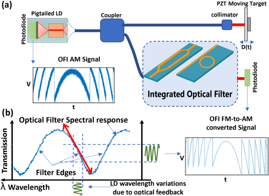
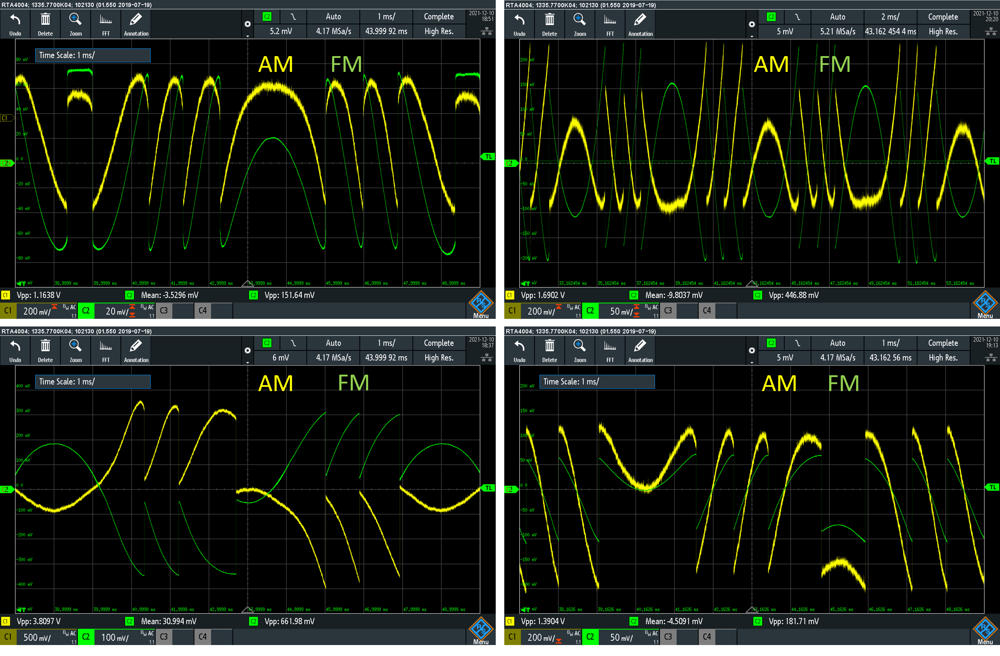
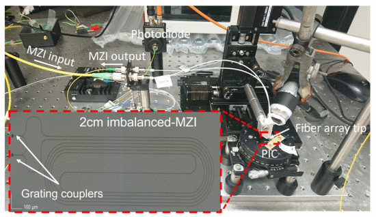
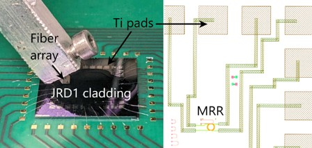
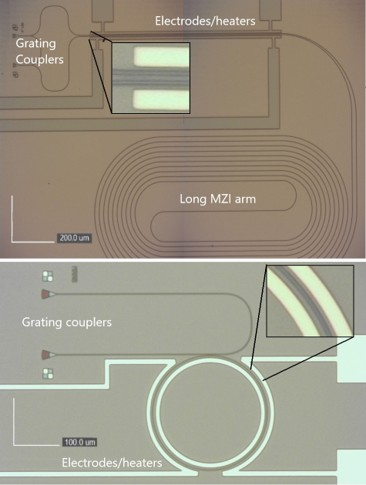
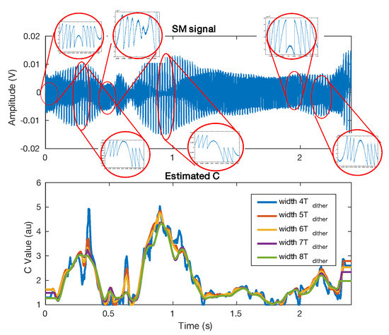

05Gallery
Figures from the project's publications and experiments.

FM-to-AM conversion scheme — OFI sensing with the laser diode and the integrated optical filter converting the FM channel into amplitude modulation (J. Lightwave Technol. 2024).

AM vs FM channels — oscilloscope captures: the FM channel, demodulated on-chip, offers a far better noise floor than the conventional AM channel.

2-cm imbalanced MZI — the silicon nitride photonic chip with its grating couplers and fiber array on the optical table (IEEE Sensors 2022).

PIC close-up — fiber alignment on titanium pads and the micro-ring router on the fabricated SiN chip.

PIC microscope views — grating couplers, thermo-optic heaters/electrodes and the long arm of the Mach–Zehnder interferometer.

Experimental setup — laser diode, isolator, beam splitter, photodiode and vibrating PZT target used to validate the sensor.

Feedback factor C estimation — speckle-affected OFI signal and on-the-fly C estimation, released as an open dataset (Sensors 2021, Zenodo).